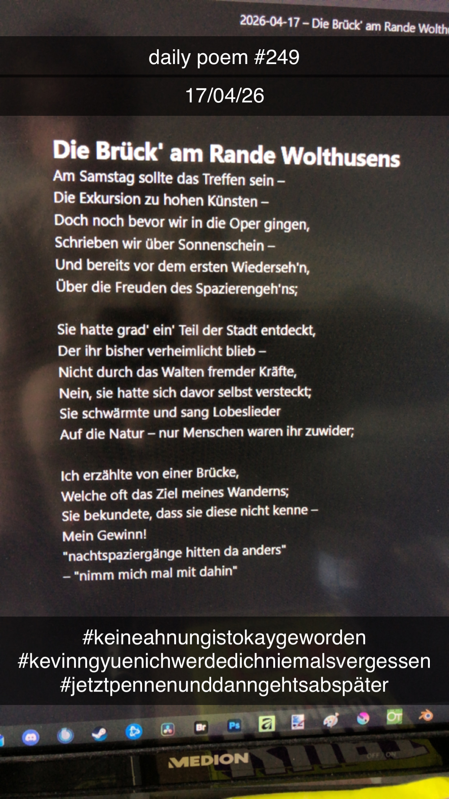

Die Brück' am Rande Wolthusens
Am Samstag sollte das Treffen sein –
Die Exkursion zu hohen Künsten –
Doch noch bevor wir in die Oper gingen,
Schrieben wir über Sonnenschein –
Und bereits vor dem ersten Wiederseh'n,
Über die Freuden des Spazierengeh'ns;
Sie hatte grad' ein' Teil der Stadt entdeckt,
Der ihr bisher verheimlicht blieb –
Nicht durch das Walten fremder Kräfte,
Nein, sie hatte sich davor selbst versteckt;
Sie schwärmte und sang Lobeslieder
Auf die Natur – nur Menschen waren ihr zuwider;
Ich erzählte von einer Brücke,
Welche oft das Ziel meines Wanderns;
Sie bekundete, dass sie diese nicht kenne –
Mein Gewinn!
"nachtspaziergänge hitten da anders"
– "nimm mich mal mit dahin"
